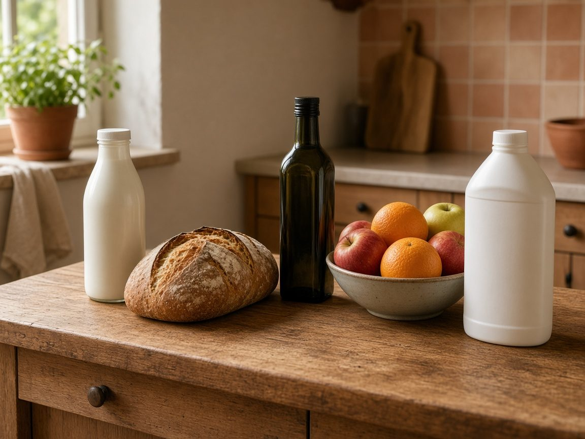
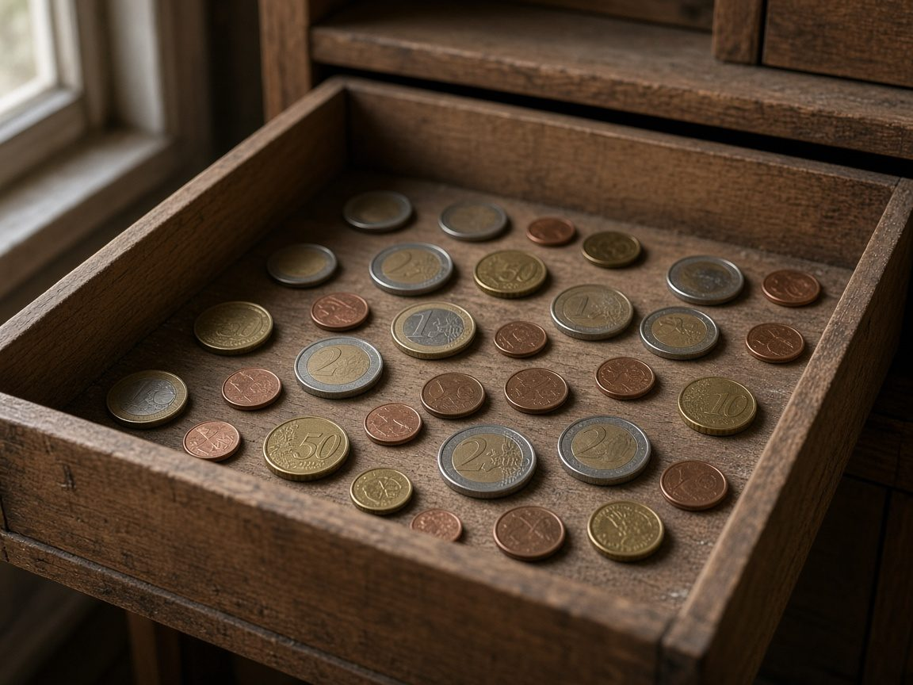
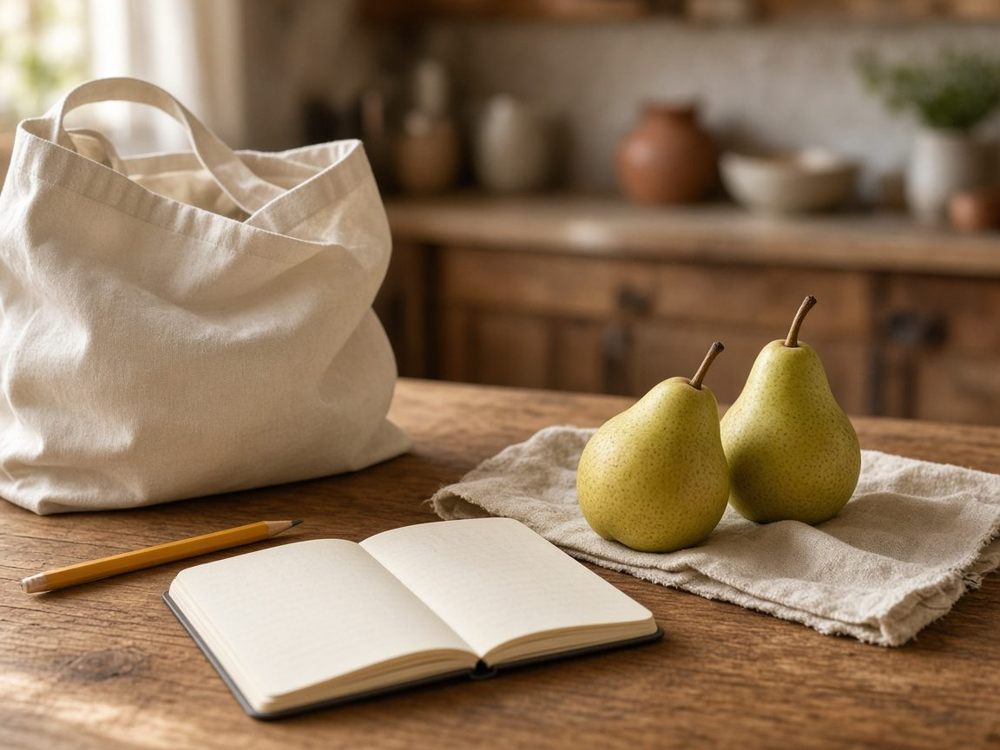

¿Te ha pasado abrir el ticket del súper y pensar «esto antes no salía tan caro»? No es solo sensación. Con el paso de los años, los mismos productos y servicios suelen costar más. Entender por qué ayuda a cuidar mejor la economía de casa, sin necesidad de ser economista.
En Casa y Comparativa hablamos de productos del hogar con honestidad. Hoy hacemos una pausa educativa: qué es la inflación, cómo se mide en España y qué gestos simples puedes aplicar en la compra y en el ahorro del día a día.
Aviso: este artículo es solo información general y educación financiera básica. No es un consejo personalizado ni una recomendación de productos de inversión.
Qué es la inflación (con ejemplo de cesta de la compra)
Inflación significa que, en general, los precios suben. Imagina tu compra habitual: leche, pan, aceite, detergente, fruta. Si esa misma lista cuesta 80 € hoy y dentro de un año cuesta 82 €, has vivido inflación en tu cesta, aunque el billete de 50 € siga diciendo «50».
El dinero no desaparece de la cartera. Lo que cambia es cuánto puedes comprar con él. A eso se le llama poder adquisitivo: la «fuerza» real de tu dinero.
Por eso a veces se dice que la inflación es un impuesto invisible. No llega una notificación. Simplemente, con el mismo sueldo o el mismo colchón en la cuenta, el carro se llena un poco menos.
El dinero no desaparece de la cartera. Lo que cambia es cuánto puedes comprar con él.

Cómo se mide en España: el IPC
En España, el termómetro oficial se llama IPC (Índice de Precios de Consumo). Lo publica el Instituto Nacional de Estadística (INE) cada mes. Mide cómo cambian los precios de una cesta representativa de lo que gastan los hogares: comida, vivienda, transporte, ocio, etc.
Tu inflación personal puede ser distinta. Si gastas mucho en alquiler y supermercado, quizá notes más la subida que alguien que gasta en otras cosas. El IPC es la media del país; tu ticket es tu realidad.
Desde el euro: ¿cuánto han subido los precios?
Los billetes y monedas en euros llegaron a los bolsillos en enero de 2002. Según el índice general del IPC del INE (base 2025), entre enero de 2002 y septiembre de 2026 los precios de esa cesta oficial han subido un 78,8 %.
En la práctica:
- Lo que costaba 100 € a principios de 2002 equivale a unos 179 € en septiembre de 2026.
- Dicho al revés: con 1.000 € de hoy compras, de media, lo que entonces comprabas con unos 559 €.
Por eso el título habla de «casi el doble»: no es una exageración de redes; es el efecto acumulado de muchas subidas pequeñas (y algunas grandes) a lo largo de más de veinte años.
El Banco Central Europeo (BCE) procura que la inflación se mantenga en torno al 2 % al año a medio plazo. Es una subida pequeña y pensada para que la economía funcione con calma. Lo que conviene tener en cuenta en casa es la suma de muchos años: poco a poco, ese 2 % va restando fuerza a tu dinero.
En 2021 y 2022 los precios subieron en España un 6,5 % y un 5,7 % (IPC de diciembre a diciembre). Donde más se notó fue en el combustible y en la comida: llenar el depósito y el carro de la compra costaba bastante más. Después las cifras bajaron, pero lo ya subido no suele volver atrás.
El dinero en el cajón también «adelgaza»
Si guardas billetes en un cajón o dejas el dinero en una cuenta corriente que casi no paga intereses, el número del extracto puede parecer estable. La cesta, no.
Ejemplo con números redondos: guardas 1.000 € y los precios suben un 2 % al año. Al año siguiente, lo que antes costaba 1.000 € cuesta 1.020 €. En diez años, unos 1.220 €. Tus 1.000 € siguen siendo 1.000 en el papel, pero llenan menos bolsas: si el dinero se queda quieto, cada año eres más pobre que el anterior. No te han robado el billete; te han reducido lo que el billete puede hacer.
No hace falta alarmarse ni correr a productos complicados. El primer paso es darse cuenta: «no hacer nada» también es una decisión, y tiene un coste silencioso.

Un poco de historia (sin drama)
La inflación fuerte no es invento de ahora.
En Alemania, en 1923, los precios se dispararon de forma extrema (hiperinflación). Hay fotos e historias de gente que llevaba el dinero en carretillas o maletas para comprar pan antes de que el precio cambiara otra vez. Es un caso límite, muy distinto de la España de hoy, pero ilustra una idea: cuando el dinero pierde valor muy rápido, la vida cotidiana se vuelve un caos.
También hubo crisis famosas —como la de 1929— y burbujas que explotaron (por ejemplo, en Japón alrededor de 1989). La lección útil para casa no es memorizar fechas, sino esta: los precios y el valor del dinero cambian; conviene mirarlos con calma, no con miedo.
Qué puedes hacer en casa (gestos prácticos)

Nada de fórmulas mágicas. Estos hábitos ayudan a muchas familias a notar menos el golpe:
- Compara el precio por kilo o por litro. El envase bonito engaña. La etiqueta de unidad ( €/kg o €/l ) te dice de verdad qué sale más a cuenta.
- Prueba la marca blanca en lo básico. Arroz, leche, papel higiénico, detergente… a menudo la diferencia de calidad es pequeña y el ahorro, no.
- Haz la lista antes de entrar. Compras con hambre o sin plan = más impulso y más ticket.
- Revisa ofertas con ojo. «2×1» solo conviene si lo ibas a comprar igual y no se tira.
- Monta un colchón de emergencias. Aunque sea poco a poco (una regla sencilla: apartar entre un 10 y un 15 % de lo que entra cada mes). Un fondo para el arreglo de la lavadora o una baja inesperada evita endeudarte a corre-corre.
- Mira si tu banco paga algo por el dinero parado. Lo ideal es que el interés sea, como mínimo, igual a la inflación del año. Por ejemplo, si los precios suben un 2 % y tu cuenta te paga un 4 %, tu dinero no pierde fuerza; si te paga un 0 %, pierde ese 2 % cada año. Además de los bancos de siempre, hoy muchos neobancos (bancos que funcionan sobre todo desde el móvil) ofrecen cuentas remuneradas. Compara condiciones y comisiones; no hace falta el producto «de moda».
Si algún día quieres dar un paso más (fondos, planes, etc.), habla con alguien de confianza o un profesional y asegúrate de entender riesgos y plazos. Aquí no recomendamos productos concretos.
Conclusión: mirar los precios es cuidarte
La historia de los precios es, en el fondo, la historia de lo que cuesta vivir.
La historia de los precios es, en el fondo, la historia de lo que cuesta vivir. En España, desde la llegada del euro en efectivo, la cesta oficial ha subido cerca de un 79 %. Por eso muchas cosas parecen el doble.
No necesitas convertirte en experta: con entender el IPC, mirar el precio por kilo, planificar la compra y no dejar todo el colchón dormido sin mirar, ya estás haciendo educación financiera de verdad. La de la cocina, el carrito y la cuenta del banco.
Fuentes (verificadas)
- INE — Índice de Precios de Consumo; herramienta «El IPC en un clic» y tabla de índice general nacional (serie IPC / tabla 24077, base 2025). Índices usados: enero 2002 = 58,717; septiembre 2026 = 104,978 → variación +78,8 %.
https://www.ine.es/varipc/index.do
https://www.ine.es/ (IPC / INEbase) - Cálculo equivalente de poder adquisitivo a partir de esos índices (mismo método que el INE): 1.000 € de ene-2002 ≈ 1.787,86 € de sep-2026; 1.000 € de sep-2026 ≈ 559 € de ene-2002. Referencia de comprobación con datos INE: https://tally.rcuadrado.es/herramientas/calculadora-inflacion (datos INE descargados 3 nov 2026).
- INE — tasas anuales diciembre sobre diciembre: 2021 = 6,5 %; 2022 = 5,7 %; 2025 = 2,9 %. (Serie de variación anual del índice general; coherente con notas de prensa del IPC.)
- Banco Central Europeo — objetivo de inflación del 2 % a medio plazo.
https://www.ecb.europa.eu/mopo/strategy/pricestab/html/index.en.html
(versión en español de la estrategia: sitio BCE / Banco de España.) - Contexto histórico de la hiperinflación alemana de 1923 (carretillas de billetes, crisis de precios extremos): síntesis histórica ampliamente documentada; p. ej. materiales del Bundesarchiv / relatos históricos de la República de Weimar.